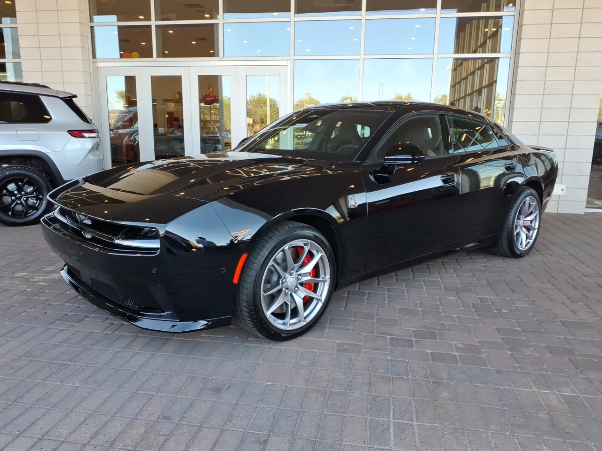

▲ 캐딜락 CT5-V 블랙윙. 카마로 세단이 이 차와 같은 후륜구동 알파 플랫폼을 공유할 가능성이 거론된다 ⓒ HJUdall, Wikimedia Commons (CC0)
국내 자동차 매체 오토트리뷴에 따르면 GM이 차세대 카마로를 4도어 세단 형태로 개발하는 방안을 검토 중인 것으로 알려졌다. 1966년 첫 출시 이후 줄곧 2도어 쿠페(또는 컨버터블)로만 존재해온 카마로가 사상 최초로 문 두 짝을 더 얻는 셈이다. 다만 뒷문이 추가되더라도 짧은 트렁크와 부풀린 후륜 펜더는 유지하는 패스트백 형태로 설계될 전망이어서, 완전히 평범한 세단이 되지는 않을 것이라는 관측이 나온다.
| 트림 | 엔진 | 예상 출력 |
|---|---|---|
| 기본형 | 2.0L 터보 4기통 | 270마력 |
| 중간 트림 | 3.0L 트윈터보 V6 | 360마력 안팎 |
| ZL1급(최상위) | 6.2L 슈퍼차저 V8(LT4) | 668마력 |
1. 왜 하필 세단인가 — 단종 후 3년, GM의 계산
카마로는 2023년 배출가스 규제와 판매 부진을 이유로 6세대를 끝으로 단종된 바 있다. 완전히 새로운 형태로 부활을 검토하는 배경에는, 2도어 쿠페 시장 자체가 축소되는 상황에서 후륜구동 세단이라는 더 넓은 수요층을 노리려는 GM의 전략적 판단이 깔려 있다는 분석이다. 캐딜락 CT5와 알파 플랫폼을 공유하면 개발비를 분산시킬 수 있다는 점도 세단화 검토에 힘을 싣는 요인으로 꼽힌다.
2. 270마력부터 668마력까지 — 3단계로 나뉠 라인업
예상되는 파워트레인 구성은 3단계로 거론된다. 기본형은 2.0L 터보 4기통으로 270마력 수준을, 중간 트림은 3.0L 트윈터보 V6로 360마력 안팎을, 최상위 고성능 트림인 ZL1급은 6.2L 슈퍼차저 V8(LT4)로 668마력까지 낼 것으로 예상된다. 최상위 트림은 현재 캐딜락 CT5-V 블랙윙에 얹힌 것과 유사한 성격의 고성능 V8 유닛으로, 세단화되더라도 머슬카 특유의 압도적인 출력만큼은 포기하지 않겠다는 신호로 읽힌다. GM은 2028년 무렵 새로운 후륜구동 스포츠 세단 출시를 준비 중인 것으로 알려져, 이 시점이 카마로 세단의 실제 등장 시기와 맞물릴 가능성이 있다.
3. 팬들의 반응은 엇갈린다
다만 이 소식을 접한 기존 카마로 팬들의 반응은 곱지 않은 편이다. 60년 가까이 2도어 쿠페로 이어져 온 정체성을 세단으로 바꾸는 것 자체가 "더 이상 카마로가 아니다"라는 반발을 부를 수 있다는 우려다. 반대로 실용성을 중시하는 잠재 구매자층에서는 뒷좌석 승하차가 편해진 4도어 머슬카라는 새로운 카테고리에 대한 기대감도 나온다. GM이 이 상반된 반응 사이에서 어떤 절충안을 내놓을지가 향후 공식 발표의 관전 포인트로 꼽힌다.
4. 4도어 머슬카, 사실 낯선 시도는 아니다
미국 자동차 업계에서 '4도어 머슬카'라는 개념 자체가 완전히 새로운 것은 아니다. 스텔란티스(옛 크라이슬러) 산하 닷지는 이미 차저(Charger)를 4도어 세단으로 판매하며 고출력 후륜구동 세단 시장을 지켜왔고, 최근에는 2도어 챌린저 후속으로 전동화 챠저를 내놓으며 라인업을 재편한 바 있다. 카마로의 경쟁 모델인 포드 머스탱만 2도어 쿠페 정체성을 고수하고 있는 셈이라, GM이 카마로를 세단화한다면 사실상 닷지 차저가 남긴 시장 공백을 다시 채우려는 시도로 해석할 수 있다.

▲ 닷지 차저 데이토나 스캣팩 세단. 4도어 머슬 세단이 이미 시장에 존재한다는 것을 보여주는 사례다 ⓒ HJUdall, Wikimedia Commons (CC0)
5. 정리 — 머슬카의 미래는 세단일까
카마로 세단 부활설은 아직 렌더링과 루머 수준에 머물러 있지만, 그 배경에는 2도어 쿠페 시장의 구조적 축소라는 뚜렷한 흐름이 자리한다. 만약 실제로 출시된다면, 668마력급 고성능 트림을 통해 머슬카 특유의 존재감은 유지하면서도 실용성을 더한 새로운 형태의 포니카가 될 가능성이 크다. 다만 정통 카마로 팬 입장에서는 이를 진짜 후속작으로 받아들일지, 완전히 다른 차종으로 볼지에 대한 논쟁이 공식 발표 이후에도 한동안 이어질 전망이다.